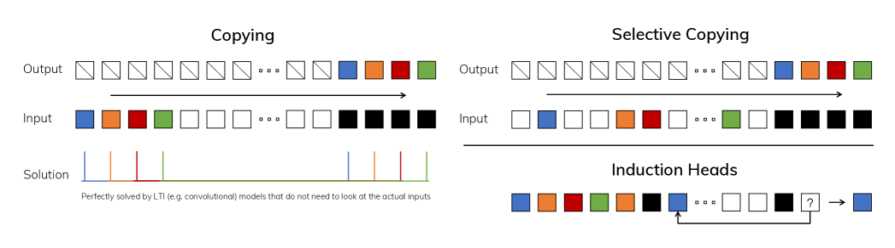
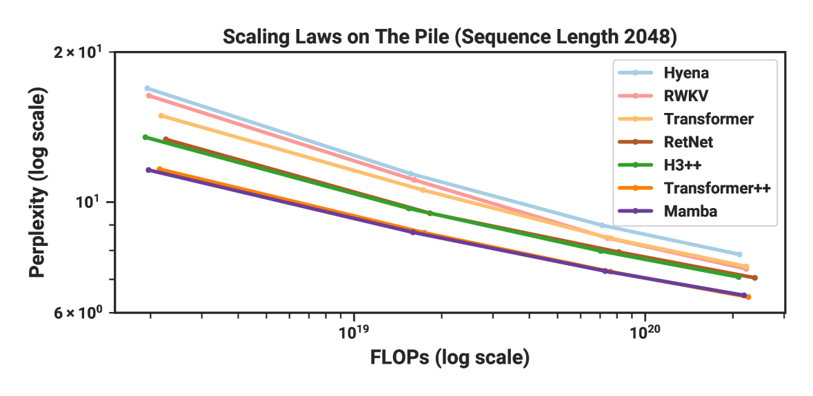

# 安装依赖
# pip install transformers torch mamba-ssm causal-conv1d
from transformers import MambaConfig, MambaForCausalLM, AutoTokenizer
import torch
# 加载预训练的Mamba模型
model_name = "state-spaces/mamba-130m-hf"
tokenizer = AutoTokenizer.from_pretrained(model_name)
model = MambaForCausalLM.from_pretrained(model_name)
# 设置pad token（Mamba使用EOS作为pad）
tokenizer.pad_token = tokenizer.eos_token
# 文本生成示例
prompt = "The capital of France is"
inputs = tokenizer(prompt, return_tensors="pt")
# 生成文本
with torch.no_grad():
outputs = model.generate(
inputs.input_ids,
max_new_tokens=20,
temperature=0.7,
do_sample=True,
)
generated_text = tokenizer.decode(outputs[0], skip_special_tokens=True)
print(f"Prompt: {prompt}")
print(f"Generated: {generated_text}")第28章：状态空间模型——序列建模的另一条路
Beyond Attention: Linear-Time Sequence Modeling with Structured State Spaces
NLP
Deep Learning
LLM
SSM
Mamba
序列建模
状态空间
Transformer的自注意力机制需要O(n²)的计算复杂度，这在处理长序列时成为瓶颈。但O(n²)是序列建模的唯一选择吗？状态空间模型（SSM）提供了一条全新的路径：借鉴控制论中的线性时不变系统，通过结构化的状态转移矩阵实现O(n)或O(n log n)的序列建模。从HiPPO的记忆理论，到S4的结构化参数化，再到Mamba的选择性机制——SSM正在成为Transformer的有力替代者。本章将带你深入这条’从循环到选择’的技术演进之路。
核心问题：Transformer的\(O(n^2)\)注意力复杂度是序列建模的唯一选择吗？能否设计一种既能捕获长距离依赖、又具有线性复杂度的序列模型？
历史坐标：2020–2024 | HiPPO (2020) → S4 (2021) → Mamba (2023) → Mamba-2 (2024) → Jamba (2024) | 从控制论到深度学习的跨界融合
Tip本章参考来源
0.1 论文
- Gu et al. (2020) “HiPPO: Recurrent Memory with Optimal Polynomial Projections” (arXiv:2008.07669) — 参考了 Section 2-4 (HiPPO框架、Legendre多项式投影)；NeurIPS 2020，SSM的理论基础
- Gu et al. (2021) “Efficiently Modeling Long Sequences with Structured State Spaces” (arXiv:2111.00396) — 参考了 Section 2-4 (S4架构、HiPPO初始化、Cauchy核计算)、Figure 1-3；ICLR 2022 Outstanding Paper
- Gu & Dao (2023) “Mamba: Linear-Time Sequence Modeling with Selective State Spaces” (arXiv:2312.00752) — 参考了 Section 2-4 (选择性机制、硬件感知算法)、Figure 1-3, 6；从论文提取了4张原图
- Dao & Gu (2024) “Transformers are SSMs: Generalized Models and Efficient Algorithms Through Structured State Space Duality” (arXiv:2405.21060) — 参考了 Section 2-4 (状态空间对偶性、SSM与Attention的联系)；ICML 2024
- Lieber et al. (2024) “Jamba: A Hybrid Transformer-Mamba Language Model” (arXiv:2403.19887) — 参考了 Section 2-3 (混合架构设计、Attention:Mamba比例)
0.2 教材与博客
- Goomba Lab “State Space Duality (Mamba-2) Part I & II” — 参考了Mamba-2的详细解释和代码实现
- Princeton PLI “Mamba-2: Algorithms and Systems” — 参考了SSD算法的解释
0.3 综述
- Wang et al. (2024) “State Space Model for New-Generation Network Alternative to Transformers: A Survey” — 参考了SSM演进脉络的梳理
1 从上一章说起
上一章我们探讨了Mixture of Experts（MoE）——通过稀疏激活实现参数量与计算量的解耦。MoE让模型可以拥有数千亿甚至万亿参数，而每次推理只激活其中一小部分。这是对Dense Transformer第一个根本挑战（“所有参数对每个token都激活”）的优雅回应。
然而，MoE解决的是FFN层的计算效率问题，并没有触及Transformer的另一个核心瓶颈：自注意力的\(O(n^2)\)复杂度。
让我们用具体数字来感受这个问题的严重性。假设序列长度\(n = 4096\)（这在2024年已经算是”短序列”了）：
- 注意力矩阵大小：\(4096 \times 4096 = 16.7M\)个元素
- 如果序列长度翻倍到\(n = 8192\)：矩阵大小变为\(67M\)，增加了4倍
- 如果是GPT-4级别的\(n = 128K\)：矩阵大小达到\(16.4B\)个元素
这种二次增长意味着：处理长文档、长对话、代码仓库、甚至整本书时，注意力计算会成为不可逾越的瓶颈。
上一章结尾我们提到，除了让模型”更大”（MoE），还有一条路径是让模型”更高效地利用参数”。这正是状态空间模型（State Space Model, SSM）要探索的方向。
SSM的核心问题是：序列建模一定需要让每个位置都与所有其他位置交互吗？
回想一下RNN——它用一个隐状态\(h_t\)来压缩所有历史信息，只需要\(O(n)\)的计算。RNN的问题不是复杂度，而是：
- 顺序计算，无法并行训练
- 梯度消失/爆炸，难以建模长距离依赖
如果我们能保留RNN的线性复杂度优势，同时解决它的并行性和长程依赖问题呢？
这正是状态空间模型的出发点。SSM借鉴了控制论中研究了几十年的线性时不变系统（Linear Time-Invariant, LTI），通过精心设计的状态转移矩阵，实现了：
- 可并行训练：通过卷积视角
- 高效推理：通过递归视角
- 长程依赖：通过HiPPO初始化
💡 本章核心洞察：序列建模不一定需要attention。通过将连续时间的状态空间方程离散化，并用结构化的方式参数化状态矩阵，可以得到一类既能并行训练、又有线性推理复杂度、还能有效捕获长距离依赖的序列模型。Mamba更进一步，通过引入”选择性机制”让模型参数依赖于输入内容，弥补了LTI模型无法进行内容感知推理的根本缺陷。
2 问题的本质是什么？
2.1 Attention的二次瓶颈
Transformer的自注意力计算如下：
\[ \text{Attention}(Q, K, V) = \text{softmax}\left(\frac{QK^\top}{\sqrt{d_k}}\right) V \]
这个公式中，\(QK^\top\)是一个\(n \times n\)的矩阵，其中\(n\)是序列长度。这意味着：
- 计算复杂度：\(O(n^2 d)\)
- 内存复杂度：\(O(n^2)\)（需要存储完整的注意力矩阵）
当\(n\)增大时，这种二次增长很快变得不可接受。例如：
| 序列长度 | 注意力矩阵大小 | FP16内存 |
|---|---|---|
| 2,048 | 4.2M | 8 MB |
| 8,192 | 67M | 134 MB |
| 32,768 | 1.07B | 2.1 GB |
| 131,072 | 17.2B | 34 GB |
即使有FlashAttention这样的IO优化，\(O(n^2)\)的本质没有改变——它只是把常数因子降低了，但增长速度仍然是二次的。
2.2 重新审视RNN
在Attention成为主流之前，RNN是序列建模的标准方法。RNN的核心是一个简单的递归方程：
\[ h_t = \sigma(W_h h_{t-1} + W_x x_t + b) \]
其中\(h_t\)是时刻\(t\)的隐状态，\(x_t\)是输入。
RNN的计算复杂度是\(O(n)\)——这是线性的！每个时间步只需要常数时间的计算。那为什么RNN被Transformer取代了呢？
问题一：顺序依赖，无法并行
计算\(h_t\)必须先知道\(h_{t-1}\)，而\(h_{t-1}\)必须先知道\(h_{t-2}\)…这意味着训练时必须按顺序计算，无法利用GPU的并行能力。一个长度为1000的序列，RNN需要串行执行1000步；而Transformer可以一次性并行计算所有位置。
问题二：梯度消失/爆炸
当反向传播经过很多时间步时，梯度要么指数级衰减（消失），要么指数级增长（爆炸）。LSTM和GRU通过门控机制缓解了这个问题，但并没有根本解决。
问题三：信息压缩瓶颈
所有历史信息都被压缩到一个固定维度的向量\(h_t\)中。当序列很长时，早期信息必然会被”覆盖”或”遗忘”。
2.3 我们需要什么样的序列模型？
理想的序列模型应该同时具备：
- 线性复杂度：\(O(n)\)或\(O(n \log n)\)，而非\(O(n^2)\)
- 可并行训练：能够充分利用GPU的并行计算能力
- 长程依赖建模：能够有效记住和利用远距离的信息
- 高效推理：生成任务中能够像RNN一样常数时间更新状态
状态空间模型（SSM）正是朝着这个目标前进的一次重要尝试。
3 核心思想与直觉
3.1 从连续到离散：状态空间的基本形式
状态空间模型起源于控制论，描述的是一类连续时间的动态系统。最简单的形式是线性时不变（LTI）系统：
\[ \frac{dx(t)}{dt} = Ax(t) + Bu(t) \] \[ y(t) = Cx(t) + Du(t) \]
其中：
- \(u(t) \in \mathbb{R}\)：输入信号（控制输入）
- \(x(t) \in \mathbb{R}^N\)：状态向量（系统的”记忆”）
- \(y(t) \in \mathbb{R}\)：输出信号
- \(A \in \mathbb{R}^{N \times N}\)：状态转移矩阵（决定状态如何演化）
- \(B \in \mathbb{R}^{N \times 1}\)：输入矩阵
- \(C \in \mathbb{R}^{1 \times N}\)：输出矩阵
- \(D \in \mathbb{R}\)：直接传递项（通常设为0或忽略）
这个系统的直觉是：
- 状态\(x(t)\)是系统的”记忆”：它编码了所有历史输入的信息
- 矩阵\(A\)决定了”遗忘模式”：它控制状态如何随时间演化
- 矩阵\(B\)决定了”输入方式”：新信息如何进入状态
- 矩阵\(C\)决定了”读取方式”：如何从状态中提取输出
用一个简单的类比：想象一个水箱系统。水箱中的水位就是”状态”，进水管道的流量是”输入”，出水管道的流量是”输出”。\(A\)决定了水箱的”漏水率”（状态的自然衰减），\(B\)决定了进水管道的效率，\(C\)决定了出水管道的效率。
3.2 离散化：从连续到可计算
神经网络处理的是离散的序列（token序列），而不是连续的信号。因此需要将连续的状态空间方程离散化。
最常用的方法是零阶保持（Zero-Order Hold, ZOH）离散化。假设输入信号在每个采样间隔\(\Delta\)内保持常数，可以得到离散形式：
\[ x_k = \bar{A} x_{k-1} + \bar{B} u_k \] \[ y_k = C x_k \]
其中离散化参数为：
\[ \bar{A} = \exp(\Delta A) \] \[ \bar{B} = (\Delta A)^{-1}(\exp(\Delta A) - I) \cdot \Delta B \]
这个形式和RNN非常相似！关键区别在于：
- 矩阵\(\bar{A}\)不是任意学习的，而是通过连续矩阵\(A\)和步长\(\Delta\)推导出来的
- 通过特殊的\(A\)矩阵初始化（如HiPPO），可以获得长程记忆能力
3.3 递归视角 vs 卷积视角
SSM的一个关键优势是它有两种等价的计算方式：
递归视角（Recurrent View）：
逐步计算状态更新：
\[ x_k = \bar{A} x_{k-1} + \bar{B} u_k, \quad y_k = C x_k \]
这种方式适合推理——每生成一个新token，只需要\(O(N)\)的计算来更新状态。
卷积视角（Convolutional View）：
将整个输入序列和一个卷积核进行卷积：
\[ \bar{K} = (C\bar{B}, C\bar{A}\bar{B}, C\bar{A}^2\bar{B}, \ldots, C\bar{A}^{L-1}\bar{B}) \] \[ y = \bar{K} * u \]
这种方式适合训练——卷积可以用FFT高效计算，复杂度为\(O(n \log n)\)，而且可以高度并行。
这种”训练时用卷积，推理时用递归”的双重性质，是SSM相对于传统RNN的关键优势。
3.4 HiPPO：长程记忆的数学基础
普通的RNN为什么无法建模长距离依赖？根本原因是：当矩阵\(A\)（或\(\bar{A}\)）被随机初始化时，状态会快速”遗忘”早期信息。
HiPPO（High-order Polynomial Projection Operators）提供了一个精妙的解决方案。核心思想是：用正交多项式来近似历史信号。
具体来说，HiPPO将历史输入信号\(u(\tau)\)（\(\tau \leq t\)）投影到Legendre多项式的系数上。这些系数就是状态向量\(x(t)\)的各个分量。
为什么这样做有效？因为：
- 正交多项式系数可以增量更新：当新输入到达时，不需要重新计算所有系数
- 低阶系数捕获”全局趋势”：即使序列很长，也能保留关于整体形状的信息
- 高阶系数捕获”局部细节”：近期的细节信息也不会丢失
HiPPO-LegS（Legendre Scaled）版本的\(A\)矩阵有如下形式：
\[ A_{nk} = -\begin{cases} (2n+1)^{1/2}(2k+1)^{1/2} & \text{if } n > k \\ n+1 & \text{if } n = k \\ 0 & \text{if } n < k \end{cases} \]
这是一个下三角矩阵，具有特殊的数学性质，能够保证状态向量以最优方式压缩历史信息。
4 技术细节
4.1 S4：结构化状态空间的突破
S4（Structured State Space for Sequences）是将SSM引入深度学习的里程碑工作。它解决了一个关键的计算瓶颈：如何高效计算卷积核\(\bar{K}\)？

Source: Gu et al. (2021) “Efficiently Modeling Long Sequences with Structured State Spaces”, Figure 1
朴素方法需要计算\(A^k\)对于\(k = 0, 1, \ldots, L-1\)，复杂度是\(O(N^2 L)\)或\(O(N^3 L)\)（取决于矩阵乘法方式）——这在长序列上是不可接受的。
S4的关键洞察是：通过低秩修正将HiPPO矩阵对角化。
具体来说，S4假设\(A\)矩阵可以分解为：
\[ A = V \Lambda V^{-1} - PQ^\top \]
其中\(\Lambda\)是对角矩阵，\(P, Q\)是低秩矩阵。这种结构化使得：
- 卷积核可以用Cauchy核高效计算：复杂度降到\(O(N + L)\)
- 训练时整体复杂度为\(O(N + L)\log(N + L)\)：接近线性
S4在长程竞技场（Long Range Arena）基准测试上取得了突破性成果，首次解决了Path-X任务——这是一个需要关注长度16384序列中首尾信息的分类任务，此前所有模型（包括Transformer）都失败了。
4.2 Mamba：选择性状态空间
S4虽然解决了计算效率问题，但它有一个根本性的限制：参数是时不变的（Time-Invariant）。
这意味着矩阵\(A\)、\(B\)、\(C\)对所有输入都是相同的——模型无法根据输入内容调整自己的行为。这与Transformer形成鲜明对比：Attention的权重\(\text{softmax}(QK^\top)\)完全依赖于输入内容。
Mamba的核心创新是引入选择性机制（Selection Mechanism）：让参数\(B\)、\(C\)和步长\(\Delta\)成为输入的函数。

Source: Gu & Dao (2023) “Mamba: Linear-Time Sequence Modeling with Selective State Spaces”, Figure 1
具体来说：
\[ B_t = \text{Linear}_B(x_t), \quad C_t = \text{Linear}_C(x_t), \quad \Delta_t = \text{softplus}(\text{Linear}_\Delta(x_t)) \]
其中\(x_t\)是时刻\(t\)的输入。这意味着：
- \(B_t\)控制”什么信息进入状态”：模型可以根据内容决定是否”记住”某个输入
- \(C_t\)控制”什么信息被读取”：模型可以根据内容决定关注状态的哪些方面
- \(\Delta_t\)控制”步长大小”：可以理解为”时间流逝速度”——步长大意味着更快遗忘旧信息
4.3 为什么选择性机制是关键？
让我们用两个具体任务来理解为什么LTI模型不够用：

Source: Gu & Dao (2023) “Mamba: Linear-Time Sequence Modeling with Selective State Spaces”, Figure 2
选择性复制（Selective Copying）：
给定序列”A X B X C X”，要求输出”A B C”。中间的”X”是噪声，应该被忽略。
LTI模型无法完成这个任务，因为它对每个输入的处理方式是相同的——无法区分”有意义的A”和”无意义的X”。
选择性SSM可以学会：当输入是”X”时，让\(\Delta\)很小（不更新状态）；当输入是有意义的字母时，让\(\Delta\)正常大小（写入状态）。
归纳头（Induction Heads）：
给定”…A B … A ?“，要求预测”B”。这需要：(1) 记住”A后面跟着B”的模式；(2) 在看到第二个”A”时召回这个模式。
LTI模型的状态更新与输入内容无关，无法实现这种”根据内容检索”的能力。
选择性SSM可以学会：用\(B_t\)编码”这是什么内容”，用\(C_t\)编码”我需要找什么内容”，从而实现关联召回。
4.4 硬件感知的选择性扫描算法
选择性机制带来了一个计算挑战：参数现在依赖于输入，无法再用FFT-based的卷积高效计算。
Mamba论文提出了一个硬件感知的并行扫描算法。核心思想是：
- 利用并行扫描（Parallel Scan）：扫描操作可以用\(O(\log L)\)的并行步骤完成\(L\)次递归
- 内存优化：不具体化完整的状态序列，而是在SRAM中逐块计算
- 内核融合：将离散化、状态更新、输出计算融合到单个GPU内核中
这个算法使得Mamba在训练时比S4快40倍以上，同时保持线性的内存复杂度。
4.5 Mamba架构
Mamba不仅仅是一个SSM层，还定义了一个完整的神经网络架构：

Source: Gu & Dao (2023) “Mamba: Linear-Time Sequence Modeling with Selective State Spaces”, Figure 3
Mamba Block的设计借鉴了门控MLP的思想：
- 输入投影：将输入扩展到更高维度（通常2倍）
- 卷积层：一个短的深度可分离卷积，捕获局部模式
- 选择性SSM：核心的序列建模组件
- 门控乘法：将SSM输出与另一条分支相乘
- 输出投影：投影回原始维度
关键设计决策：
- 没有Attention：整个模型完全基于SSM
- 没有MLP块：SSM本身就包含了足够的非线性
- 状态维度\(N\)：通常设为16，远小于隐藏维度
NoteAlgorithm 1: Selective SSM Forward Pass (Mamba)
def selective_ssm(u, A, B, C, delta):
"""
选择性状态空间模型的前向传播
Args:
u: [batch, seq_len, d_model] 输入序列
A: [d_inner, N] 状态转移矩阵参数
B: [batch, seq_len, N] 输入依赖的B矩阵
C: [batch, seq_len, N] 输入依赖的C矩阵
delta: [batch, seq_len, d_inner] 输入依赖的步长
Returns:
y: [batch, seq_len, d_model] 输出序列
"""
# Step 1: 离散化 (ZOH)
# A_bar = exp(delta * A)
A_bar = torch.exp(delta.unsqueeze(-1) * A) # [batch, seq_len, d_inner, N]
B_bar = delta.unsqueeze(-1) * B.unsqueeze(2) # [batch, seq_len, d_inner, N]
# Step 2: 并行扫描计算状态序列
# x_k = A_bar_k * x_{k-1} + B_bar_k * u_k
x = parallel_scan(A_bar, B_bar * u.unsqueeze(-1)) # [batch, seq_len, d_inner, N]
# Step 3: 计算输出
# y_k = C_k * x_k
y = torch.einsum('bldn,bln->bld', x, C) # [batch, seq_len, d_inner]
return y
def parallel_scan(A_bar, BU):
"""
并行扫描算法：O(log L) 并行步骤完成 L 次递归
关键洞察：递归 x_k = A_k * x_{k-1} + b_k 可以重写为
结合律的二元运算 (A_k, b_k) * (A_{k-1}, b_{k-1}) = (A_k*A_{k-1}, A_k*b_{k-1}+b_k)
然后用并行前缀和算法高效计算
"""
# 具体实现涉及GPU内核优化，此处省略
passSource: Adapted from Gu & Dao (2023) “Mamba”, Section 3.3
4.6 Scaling Laws与性能
Mamba在语言建模任务上表现出色：

Source: Gu & Dao (2023) “Mamba: Linear-Time Sequence Modeling with Selective State Spaces”, Figure 6
关键发现：
- Mamba-3B在预训练困惑度上与Transformer-3B相当
- 在下游评估中，Mamba-3B与Transformer-6B相当（2倍参数效率）
- 推理吞吐量是Transformer的5倍（归功于线性复杂度）
4.7 数值示例：选择性SSM的状态更新
让我们用一个简化的数值例子来理解选择性SSM的工作方式。
设定：
- 状态维度 \(N = 2\)
- 输入维度 \(d = 1\)（简化为标量）
- 3个时间步
输入序列：\(u = [0.5, 0.8, 0.2]\)（假设这是一个”重要-重要-不重要”的模式）
固定参数：
\[ A = \begin{bmatrix} -0.5 & 0 \\ 0 & -1.0 \end{bmatrix} \quad \text{(负值，保证稳定性)} \]
输入依赖的参数（经过网络计算后）：
| 时间步 \(t\) | 输入 \(u_t\) | \(\Delta_t\) | \(B_t\) | \(C_t\) |
|---|---|---|---|---|
| 1 | 0.5 | 0.8 | [1.0, 0.5] | [0.6, 0.4] |
| 2 | 0.8 | 0.9 | [1.2, 0.6] | [0.5, 0.5] |
| 3 | 0.2 | 0.1 | [0.3, 0.1] | [0.7, 0.3] |
注意：\(\Delta_3 = 0.1\)很小，因为输入\(u_3 = 0.2\)被判断为”不重要”。
Step 1：离散化（\(t=1\)）
\[ \bar{A}_1 = \exp(\Delta_1 \cdot A) = \exp\left(0.8 \times \begin{bmatrix} -0.5 & 0 \\ 0 & -1.0 \end{bmatrix}\right) = \begin{bmatrix} e^{-0.4} & 0 \\ 0 & e^{-0.8} \end{bmatrix} \approx \begin{bmatrix} 0.67 & 0 \\ 0 & 0.45 \end{bmatrix} \]
\[ \bar{B}_1 \approx \Delta_1 \cdot B_1 = 0.8 \times [1.0, 0.5] = [0.8, 0.4] \]
Step 2：状态更新
初始状态 \(x_0 = [0, 0]\)
\[ x_1 = \bar{A}_1 x_0 + \bar{B}_1 u_1 = [0, 0] + [0.8, 0.4] \times 0.5 = [0.4, 0.2] \]
\[ y_1 = C_1 \cdot x_1 = [0.6, 0.4] \cdot [0.4, 0.2] = 0.24 + 0.08 = 0.32 \]
类似地计算 \(t=2\)：
\[ x_2 = \bar{A}_2 x_1 + \bar{B}_2 u_2 = [0.64 \times 0.4, 0.41 \times 0.2] + [1.08, 0.54] \times 0.8 \] \[ = [0.256, 0.082] + [0.864, 0.432] = [1.12, 0.51] \]
\[ y_2 = C_2 \cdot x_2 = [0.5, 0.5] \cdot [1.12, 0.51] = 0.82 \]
对于 \(t=3\)，由于 \(\Delta_3 = 0.1\) 很小：
\[ \bar{A}_3 = \begin{bmatrix} e^{-0.05} & 0 \\ 0 & e^{-0.1} \end{bmatrix} \approx \begin{bmatrix} 0.95 & 0 \\ 0 & 0.90 \end{bmatrix} \]
状态几乎不变：
\[ x_3 \approx [0.95 \times 1.12, 0.90 \times 0.51] + [0.03, 0.01] \times 0.2 = [1.07, 0.46] \]
关键观察：
- 当输入”重要”（\(u_1, u_2\)较大）时，\(\Delta\)较大，状态更新明显
- 当输入”不重要”（\(u_3\)较小）时，\(\Delta\)较小，状态几乎保持不变
- 这就是”选择性”的含义：模型学会了何时记忆、何时忽略
5 Mamba-2与状态空间对偶性
5.1 SSD：结构化状态空间对偶
Mamba-2论文揭示了一个深刻的理论联系：特定形式的SSM与特定形式的Attention在数学上是等价的。
这种联系被称为状态空间对偶性（Structured State Space Duality, SSD）。
具体来说，当SSM的状态矩阵\(A\)是”标量乘以单位矩阵”的形式时：
\[ A = -a \cdot I, \quad a > 0 \]
SSM的输入输出关系可以写成：
\[ y = M \cdot (L \odot V) \]
其中\(L\)是一个1-半可分（1-semiseparable）因果掩码矩阵，\(V\)是值向量，\(M\)是一个累乘矩阵。
这与masked self-attention有惊人的相似性——attention也是对值向量做加权求和，权重由查询-键相似度决定。
5.2 两种计算视角的统一
SSD框架的核心洞察是：同一个序列变换可以用两种算法实现：
- SSM视角：\(O(n)\)的递归计算
- Attention视角：\(O(n^2)\)的矩阵乘法计算
在实践中，我们可以根据硬件特性选择最优实现：
- 短序列：使用矩阵乘法（更好地利用GPU的tensor core）
- 长序列：使用递归（避免\(O(n^2)\)的内存开销）
- 混合策略：将长序列分成块，块内用矩阵乘法，块间用递归
Mamba-2利用这种灵活性，实现了比Mamba快2-8倍的训练速度。
5.3 Mamba-2的改进
除了SSD框架，Mamba-2还引入了几个实用改进：
- 多头结构：类似Transformer的multi-head attention，Mamba-2将状态空间分成多个”头”，每个头独立处理
- 归一化：在SSM后添加RMSNorm，提高训练稳定性
- 更大的状态维度：从Mamba的\(N=16\)增加到\(N=64\)或更大
6 混合架构：结合两种范式的优势
6.1 为什么需要混合？
尽管Mamba展示了impressive的性能，但它并非在所有任务上都优于Transformer。研究发现：
- Attention擅长：精确的信息检索、复杂的推理、需要全局视角的任务
- SSM擅长：长序列建模、高效推理、流式处理
一个自然的想法是：何不把两者结合起来？
6.2 Jamba：混合Transformer-Mamba架构
Jamba是AI21 Labs在2024年3月发布的混合架构模型，也是第一个大规模的Transformer-Mamba混合模型。
核心设计：
- 交替层：Attention层和Mamba层以1:7的比例交替
- MoE集成：每隔一层使用MoE，提供更大的模型容量
- 总参数：52B（12B激活参数）
- 上下文长度：256K tokens
架构细节：
Layer 0: Mamba
Layer 1: Mamba + MoE
Layer 2: Mamba
Layer 3: Attention + MoE
Layer 4: Mamba
Layer 5: Mamba + MoE
Layer 6: Mamba
Layer 7: Attention + MoE
...（重复）关键发现：
- Mamba层不需要位置编码：与Transformer不同，Mamba天然具有位置感知能力（通过递归状态）
- 少量Attention就够了：1:7的比例（约12.5%的Attention层）已经足够保留Transformer的优势
- 内存效率：由于大部分层是Mamba（无KV cache），整体内存需求远低于纯Transformer
性能表现：
- 在256K上下文窗口内：接近Claude-2的质量
- 推理速度：显著快于同规模的纯Transformer
- 内存占用：可以在单个80GB GPU上运行完整的52B模型
6.3 混合架构的设计原则
从Jamba和后续工作中，我们可以总结出一些混合架构的设计原则：
- Attention层放在关键位置：早期层和晚期层可能更需要全局交互
- Mamba处理”重复性”计算：中间层的大量计算可以交给更高效的Mamba
- 可以结合MoE：三种技术（Attention、SSM、MoE）可以正交地组合
7 工程实践
7.1 使用Hugging Face加载Mamba模型
Mamba模型已经集成到Hugging Face的transformers库中，可以方便地加载和使用：
7.2 从零实现简化版SSM
为了深入理解SSM的工作原理，让我们实现一个简化版本：
import torch
import torch.nn as nn
import torch.nn.functional as F
class SimpleSSM(nn.Module):
"""
简化版状态空间模型（用于教学目的）
关键组件：
- A: 状态转移矩阵（对角化，用于稳定性）
- B, C: 输入/输出投影
- delta: 离散化步长
"""
def __init__(self, d_model, d_state=16):
super().__init__()
self.d_model = d_model
self.d_state = d_state
# A矩阵：使用负值保证稳定性（对角化简化）
# 初始化为HiPPO-like的值
A = torch.arange(1, d_state + 1, dtype=torch.float32)
self.A_log = nn.Parameter(torch.log(A)) # 学习log(A)保证正值
# B, C投影
self.B_proj = nn.Linear(d_model, d_state, bias=False)
self.C_proj = nn.Linear(d_model, d_state, bias=False)
# Delta投影（控制离散化步长）
self.delta_proj = nn.Linear(d_model, d_model, bias=False)
# 输出投影
self.out_proj = nn.Linear(d_model, d_model)
def forward(self, x):
"""
Args:
x: [batch, seq_len, d_model]
Returns:
y: [batch, seq_len, d_model]
"""
batch, seq_len, _ = x.shape
# 计算输入依赖的参数（选择性机制的核心）
B = self.B_proj(x) # [batch, seq_len, d_state]
C = self.C_proj(x) # [batch, seq_len, d_state]
# 计算delta（步长），使用softplus保证正值
delta = F.softplus(self.delta_proj(x)) # [batch, seq_len, d_model]
# 获取A（对角矩阵，用向量表示）
A = -torch.exp(self.A_log) # [d_state]，负值保证稳定
# 离散化：使用简化的ZOH近似
# A_bar = exp(delta * A) ≈ 1 + delta * A（一阶近似）
# 这里我们对每个通道独立处理
delta_A = delta.unsqueeze(-1) * A # [batch, seq_len, d_model, d_state]
A_bar = torch.exp(delta_A)
# B_bar = delta * B
B_bar = delta.unsqueeze(-1) * B.unsqueeze(2) # [batch, seq_len, d_model, d_state]
# 递归计算状态（简化版，实际Mamba使用并行扫描）
h = torch.zeros(batch, self.d_model, self.d_state, device=x.device)
outputs = []
for t in range(seq_len):
# 状态更新: h_t = A_bar * h_{t-1} + B_bar * x_t
h = A_bar[:, t] * h + B_bar[:, t] * x[:, t:t+1, :].transpose(1, 2)
# 输出: y_t = C_t * h_t
y_t = torch.einsum('bdn,bn->bd', h, C[:, t])
outputs.append(y_t)
y = torch.stack(outputs, dim=1) # [batch, seq_len, d_model]
return self.out_proj(y)
# 测试
if __name__ == "__main__":
batch_size, seq_len, d_model = 2, 10, 64
ssm = SimpleSSM(d_model=d_model, d_state=16)
x = torch.randn(batch_size, seq_len, d_model)
y = ssm(x)
print(f"Input shape: {x.shape}")
print(f"Output shape: {y.shape}")
print(f"Parameters: {sum(p.numel() for p in ssm.parameters()):,}")7.3 比较Mamba与Transformer的推理速度
以下代码展示如何比较两种架构的推理效率：
import torch
import time
from transformers import (
MambaForCausalLM,
GPT2LMHeadModel,
AutoTokenizer
)
def benchmark_generation(model, tokenizer, prompt, max_new_tokens=100, num_runs=5):
"""测量生成速度"""
inputs = tokenizer(prompt, return_tensors="pt")
if torch.cuda.is_available():
model = model.cuda()
inputs = {k: v.cuda() for k, v in inputs.items()}
# Warmup
with torch.no_grad():
_ = model.generate(inputs["input_ids"], max_new_tokens=10)
# Benchmark
times = []
for _ in range(num_runs):
torch.cuda.synchronize() if torch.cuda.is_available() else None
start = time.perf_counter()
with torch.no_grad():
outputs = model.generate(
inputs["input_ids"],
max_new_tokens=max_new_tokens,
do_sample=False, # Greedy for reproducibility
)
torch.cuda.synchronize() if torch.cuda.is_available() else None
times.append(time.perf_counter() - start)
avg_time = sum(times) / len(times)
tokens_per_sec = max_new_tokens / avg_time
return avg_time, tokens_per_sec, outputs
# 比较Mamba和GPT2（相近规模）
prompt = "In the field of artificial intelligence, large language models have"
print("=" * 60)
print("Loading Mamba-130M...")
mamba_tokenizer = AutoTokenizer.from_pretrained("state-spaces/mamba-130m-hf")
mamba_model = MambaForCausalLM.from_pretrained("state-spaces/mamba-130m-hf")
mamba_tokenizer.pad_token = mamba_tokenizer.eos_token
mamba_time, mamba_tps, mamba_out = benchmark_generation(
mamba_model, mamba_tokenizer, prompt
)
print(f"Mamba-130M: {mamba_time:.3f}s, {mamba_tps:.1f} tokens/s")
print("\nLoading GPT2 (124M)...")
gpt2_tokenizer = AutoTokenizer.from_pretrained("gpt2")
gpt2_model = GPT2LMHeadModel.from_pretrained("gpt2")
gpt2_tokenizer.pad_token = gpt2_tokenizer.eos_token
gpt2_time, gpt2_tps, gpt2_out = benchmark_generation(
gpt2_model, gpt2_tokenizer, prompt
)
print(f"GPT2-124M: {gpt2_time:.3f}s, {gpt2_tps:.1f} tokens/s")
print("\n" + "=" * 60)
print(f"Speedup: {gpt2_time / mamba_time:.2f}x")
print("=" * 60)
Tip运行提示
- GPU推荐：虽然CPU也能运行，但GPU上性能差异更明显
- 长序列测试：Mamba的优势在长序列上更显著，可以尝试更长的
max_new_tokens - 内存监控：观察KV cache增长（GPT2）vs 固定状态（Mamba）
7.4 可视化SSM的状态演化
理解SSM如何”记忆”信息的一个好方法是可视化状态向量的演化：
import matplotlib.pyplot as plt
import numpy as np
def visualize_ssm_state(A_diag, B, C, inputs, title="SSM State Evolution"):
"""
可视化SSM状态随时间的演化
Args:
A_diag: 对角A矩阵的值 [d_state]
B: 输入矩阵 [d_state]
C: 输出矩阵 [d_state]
inputs: 输入序列 [seq_len]
"""
seq_len = len(inputs)
d_state = len(A_diag)
# 初始化
states = np.zeros((seq_len + 1, d_state))
outputs = np.zeros(seq_len)
# 模拟SSM
delta = 0.1 # 固定步长
A_bar = np.exp(delta * A_diag)
B_bar = delta * B
for t in range(seq_len):
# 状态更新
states[t + 1] = A_bar * states[t] + B_bar * inputs[t]
# 输出
outputs[t] = np.dot(C, states[t + 1])
# 绘图
fig, axes = plt.subplots(3, 1, figsize=(12, 8))
# 输入序列
axes[0].stem(range(seq_len), inputs, basefmt=" ")
axes[0].set_title("Input Sequence")
axes[0].set_xlabel("Time step")
axes[0].set_ylabel("Input value")
# 状态演化（热力图）
im = axes[1].imshow(states[1:].T, aspect='auto', cmap='RdBu_r')
axes[1].set_title("State Evolution (each row = one state dimension)")
axes[1].set_xlabel("Time step")
axes[1].set_ylabel("State dimension")
plt.colorbar(im, ax=axes[1])
# 输出序列
axes[2].plot(outputs, 'g-o', markersize=4)
axes[2].set_title("Output Sequence")
axes[2].set_xlabel("Time step")
axes[2].set_ylabel("Output value")
plt.suptitle(title, fontsize=14)
plt.tight_layout()
plt.savefig("ssm_state_evolution.png", dpi=150, bbox_inches='tight')
plt.show()
# 示例：观察SSM如何记住脉冲输入
np.random.seed(42)
d_state = 8
# HiPPO-like初始化：不同的衰减率
A_diag = -np.arange(1, d_state + 1) * 0.5 # 负值，越高维度衰减越快
B = np.ones(d_state) * 0.5
C = np.random.randn(d_state) * 0.3
# 输入：一个脉冲 + 一些噪声
inputs = np.zeros(50)
inputs[5] = 1.0 # 脉冲1
inputs[25] = 0.5 # 脉冲2
visualize_ssm_state(A_diag, B, C, inputs, "SSM Response to Impulse Inputs")这个可视化展示了几个关键点：
- 不同状态维度的衰减速率不同：低维度（小的\(|A|\)）衰减慢，保留长期记忆
- 脉冲响应：输入的脉冲会在状态中留下”痕迹”，逐渐衰减
- 输出是状态的线性组合：\(C\)矩阵决定了如何从状态中”读取”信息
8 深入理解
8.1 为什么有效？——理论视角
8.1.1 SSM的表达能力
从理论上，SSM可以被理解为一类特殊的线性递归神经网络（Linear RNN）。线性RNN的表达能力受限于其线性特性——它只能表示线性函数。
然而，SSM通过以下机制获得了更强的表达能力：
- 非线性激活：SSM层后通常跟着非线性激活
- 多层堆叠：深层SSM可以逼近复杂的非线性映射
- 选择性机制：Mamba的输入依赖参数引入了数据依赖的非线性
8.1.2 与Attention的理论联系
Mamba-2的SSD框架揭示了SSM和Attention之间的深层联系。从某种意义上说，SSM可以被看作是一种”结构化的Attention”——它使用特定形式的掩码矩阵（1-semiseparable），而不是任意学习的attention权重。
这种结构化带来的限制是：SSM无法实现任意的长距离信息交互。它必须通过状态向量”传递”信息，而状态向量的容量是有限的。
8.2 为什么有效？——实证视角
8.2.1 长程建模的证据
S4在Long Range Arena基准测试上的表现证明了SSM可以有效建模长距离依赖：
| 任务 | 序列长度 | S4 | Transformer |
|---|---|---|---|
| ListOps | 2,048 | 59.6% | 36.4% |
| Text | 4,096 | 86.8% | 64.3% |
| Retrieval | 4,000 | 90.9% | 53.4% |
| Image | 1,024 | 88.7% | 42.4% |
| Path-X | 16,384 | 88.1% | random |
| PathFinder | 1,024 | 94.2% | 71.4% |
Path-X任务特别值得关注：这是一个需要追踪16384长度序列中从起点到终点路径的任务。所有Transformer变体都失败了（等同于随机猜测），而S4成功解决了这个任务。

Source: Gu et al. (2021) “Efficiently Modeling Long Sequences with Structured State Spaces”, Figure 2
8.2.2 Mamba的语言建模实验
Mamba在语言建模上的成功表明，SSM不仅能处理”人工”的长程任务，还能在真实的NLP数据上与Transformer竞争：
- Mamba-130M vs Transformer-130M：困惑度更低
- Mamba-1.4B vs Transformer-1.4B：困惑度相当
- Mamba-3B vs Transformer-6B：下游任务性能相当
8.3 方法的边界条件
8.3.1 什么任务SSM表现不好？
- 需要精确检索的任务：当任务需要从长序列中精确定位并提取特定信息时，有限容量的状态向量可能不够
- 复杂推理任务：多步推理可能需要更灵活的信息交互模式
- 短序列任务：当序列很短时，\(O(n^2)\)的开销不是问题，Attention的全局交互可能更有优势
8.3.2 计算效率的边界
尽管SSM理论上是\(O(n)\)，但实际效率取决于多个因素：
- 状态维度\(N\)：更大的\(N\)提供更多容量，但计算量也更大
- 硬件利用率：Mamba的并行扫描在某些硬件上不如矩阵乘法高效
- 内存带宽：SSM的状态更新是memory-bound的，可能受限于内存带宽
8.4 开放研究问题
SSM vs Attention的本质差异：它们分别擅长什么？有没有任务类型的理论划分？
最优的混合比例：Attention和SSM应该如何组合？1:7的比例是最优的吗？
更强的选择性机制：Mamba的选择性机制够强吗？有没有更好的输入依赖设计？
Scaling Law：SSM的scaling behavior与Transformer有何不同？更大规模时谁更有优势？
多模态SSM：SSM能否像Transformer一样成为多模态的通用架构？
9 局限性与未解决的问题
9.1 本方法的局限
状态容量的限制
SSM的核心是用一个固定维度的状态向量来压缩所有历史信息。当需要记住的信息量超过状态容量时，必然会发生信息损失。
相比之下，Transformer的KV cache可以存储完整的历史信息（尽管代价是\(O(n)\)的内存增长）。
并行性的权衡
Mamba的并行扫描算法虽然高效，但仍然不如矩阵乘法那样完美地映射到GPU的tensor core上。在短到中等长度的序列上，Transformer可能实际上更快。
生态系统的成熟度
Transformer有多年的工程优化积累（FlashAttention、vLLM、TensorRT等），而SSM的工具链相对不成熟。这影响了SSM在生产环境中的部署。
9.2 这些局限导向了什么？
SSM和Transformer各有所长，这促使我们思考：
未来的序列模型会是什么样的？
- 纯Transformer？
- 纯SSM？
- 还是像Jamba那样的混合架构？
目前的证据表明，混合架构可能是更有前景的方向——结合Attention的全局推理能力和SSM的高效长程建模能力。
是否存在更统一的框架？
Mamba-2的SSD理论表明，SSM和Attention可能只是更一般的序列变换的两种特例。是否存在一个统一的框架，让我们能够在连续的谱系上设计序列模型？
10 本章小结
10.1 核心要点回顾
问题：Transformer的\(O(n^2)\)注意力复杂度在长序列上成为瓶颈。我们需要既能捕获长距离依赖、又有线性复杂度的序列模型。
洞察：借鉴控制论中的状态空间模型，通过精心设计的状态转移矩阵（HiPPO初始化），可以实现长程记忆。关键创新是Mamba的选择性机制——让参数依赖于输入，弥补了LTI模型的根本缺陷。
方法：
- SSM将连续时间系统离散化为可训练的递归网络
- 利用卷积/递归对偶性：训练时用卷积（可并行），推理时用递归（高效）
- HiPPO初始化保证长程记忆
- 选择性机制让模型能够根据内容决定”何时记忆、何时忽略”
意义：SSM为超越Transformer提供了一条可行路径。Mamba证明了在语言建模等核心任务上，线性复杂度的模型可以与Transformer竞争。混合架构（如Jamba）展示了结合两种范式优势的可能性。
10.2 关键公式速查
连续状态空间方程：
\[ \frac{dx(t)}{dt} = Ax(t) + Bu(t), \quad y(t) = Cx(t) \]
离散化（ZOH）：
\[ \bar{A} = \exp(\Delta A), \quad \bar{B} = (\Delta A)^{-1}(\exp(\Delta A) - I) \cdot \Delta B \]
离散递归：
\[ x_k = \bar{A} x_{k-1} + \bar{B} u_k, \quad y_k = C x_k \]
卷积核：
\[ \bar{K} = (C\bar{B}, C\bar{A}\bar{B}, C\bar{A}^2\bar{B}, \ldots), \quad y = \bar{K} * u \]
选择性参数化（Mamba）：
\[ B_t = f_B(x_t), \quad C_t = f_C(x_t), \quad \Delta_t = \text{softplus}(f_\Delta(x_t)) \]
10.3 思考题
[概念理解] 为什么HiPPO初始化能够帮助SSM建模长距离依赖？如果用随机初始化的\(A\)矩阵，会发生什么？
[数学推导] 证明：当\(A = -aI\)（\(a > 0\)）时，离散化后的\(\bar{A} = e^{-a\Delta}I\)。这说明状态会以什么速率”遗忘”？\(\Delta\)大小如何影响遗忘速率？
工程实践 使用Hugging Face的
transformers库加载一个Mamba模型（如state-spaces/mamba-130m），在相同的文本上比较它与同规模Transformer的推理速度和困惑度。[开放思考] Jamba使用1:7的Attention:Mamba比例。你认为这个比例是否最优？如果让你设计一个混合架构，你会如何决定在哪些层使用Attention、在哪些层使用SSM？
11 延伸阅读
11.1 核心论文（必读）
- Gu et al. (2021) “Efficiently Modeling Long Sequences with Structured State Spaces (S4)”
- 重点读：Section 3 (S4架构)、Section 4 (HiPPO初始化)
- ICLR 2022 Outstanding Paper，现代SSM的奠基之作
- Gu & Dao (2023) “Mamba: Linear-Time Sequence Modeling with Selective State Spaces”
- 重点读：Section 3 (选择性机制)、Section 3.3 (硬件感知算法)
- 将SSM带入语言建模主流
- Dao & Gu (2024) “Transformers are SSMs: Generalized Models and Efficient Algorithms Through Structured State Space Duality”
- 重点读：Section 2 (SSD理论)
- 揭示SSM与Attention的深层联系
11.2 理论基础
- Gu et al. (2020) “HiPPO: Recurrent Memory with Optimal Polynomial Projections”
- HiPPO初始化的数学原理
11.3 后续发展
- Lieber et al. (2024) “Jamba: A Hybrid Transformer-Mamba Language Model”
- 第一个大规模混合架构
- AI21 (2024) “Jamba-1.5: Hybrid Transformer-Mamba Models at Scale”
- Jamba的规模化扩展
11.4 综述与教程
- Goomba Lab Blog “State Space Duality (Mamba-2)” — Mamba-2的详细解释
- The Annotated S4 (srush/annotated-s4) — S4的详细代码注释
11.5 代码资源
- state-spaces/mamba — Mamba官方实现
- state-spaces/s4 — S4官方实现
- Hugging Face — Mamba模型权重
12 历史注脚
状态空间模型在深度学习中的应用是一个跨学科融合的典范。
Albert Gu在Stanford攻读博士期间，师从Christopher Ré教授。Ré的实验室一直关注如何构建更高效的机器学习系统。Gu最初的研究方向是理解RNN为什么难以建模长距离依赖。
在探索这个问题时，Gu发现了控制论中的状态空间模型。这是一个有几十年历史的理论框架，主要用于分析和设计控制系统（如自动驾驶汽车、机器人等）。控制论研究者早就知道，通过特殊设计的状态转移矩阵，可以让系统保持对久远历史的”记忆”。
HiPPO框架正是这种洞察的数学实现。有趣的是，HiPPO的名字来源于它的核心思想：High-order Polynomial Projection Operators（高阶多项式投影算子）。这个名字也恰好与英文中的”河马”（hippo）同音——一种以记忆力强而闻名的动物。
S4论文的发表引起了广泛关注，因为它首次证明了非Attention模型可以解决长程建模任务。但S4的一个关键限制是它是线性时不变的——这在处理自然语言时是一个严重的缺陷，因为语言理解本质上需要内容感知的推理。
Mamba的关键洞察就是引入选择性机制来解决这个问题。论文的标题”Linear-Time Sequence Modeling with Selective State Spaces”强调了两个核心点：线性时间复杂度和选择性。这两者的结合使得Mamba成为第一个在语言建模上能够与Transformer竞争的SSM。
Tri Dao是Mamba的另一位作者，他以FlashAttention闻名。有趣的是，同一个人既开发了让Attention更高效的技术（FlashAttention），也开发了Attention的替代方案（Mamba）。这反映了一种务实的研究态度：不是”Attention vs SSM”的二选一，而是为不同场景提供最优的工具。
2024年，混合架构的兴起印证了这种务实态度。Jamba、Zamba等模型表明，未来的序列模型可能不是纯Transformer或纯SSM，而是两者的有机结合。
从HiPPO到S4到Mamba到混合架构，这条研究路径展示了一个重要的方法论启示：有时候，解决深度学习问题的最好方法是从其他领域借鉴成熟的数学工具。控制论、信号处理、动力系统——这些”传统”领域积累了大量关于序列和时间的知识，等待着被重新发现和应用。